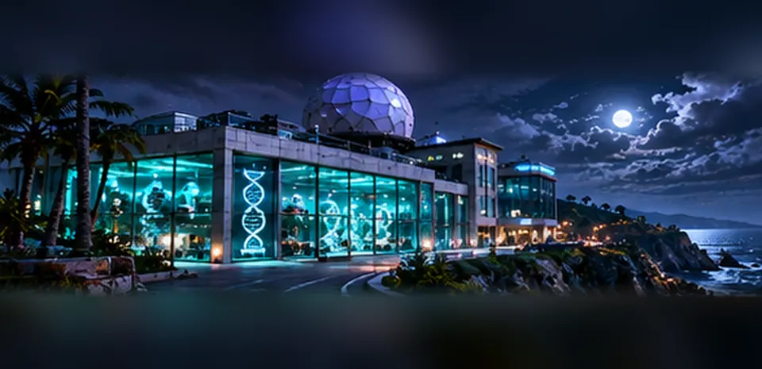
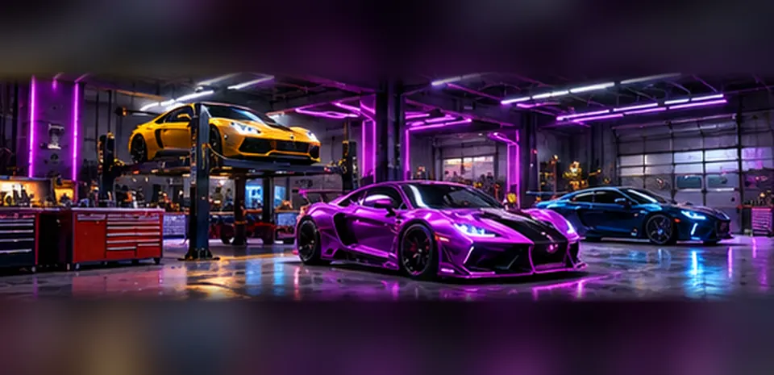
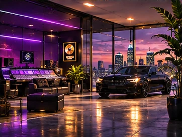
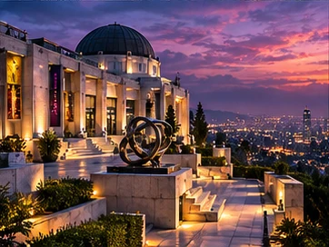

ORIGINAL HEISTS
The Fleeca Job
Fleeca Bank · Los Santos
Open heist workspace →Choose a dedicated heist-planning workspace with local progress, game-specific mission objectives and linked maps. Illustrative schematics and unverified rewards are labeled; actual in-game positions require source verification.
Fleeca Bank · Los Santos
Open heist workspace →Bolingbroke Penitentiary · Blaine County
Open heist workspace →
Humane Labs · San Chianski
Open heist workspace →Los Santos and Blaine County · Los Santos
Open heist workspace →
Pacific Standard Bank · Los Santos
Open heist workspace →
IAA / Facility · Los Santos
Open heist workspace →Facility / Offshore · San Andreas
Open heist workspace →
Facility / Mount Chiliad · Blaine County
Open heist workspace →
Diamond Casino & Resort · East Vinewood
Open heist workspace →Cayo Perico · Cayo Perico
Open heist workspace →
Cluckin’ Bell · Paleto Bay
Open heist workspace →
Various · Los Santos
Open heist workspace →
Various · Los Santos
Open heist workspace →
Agency / Los Santos · Los Santos
Open heist workspace →
Kortz Center · Pacific Bluffs
Open heist workspace →All content is an unofficial fan-made planning aid. This release does not claim fully verified mission routes, spawn positions, or live rewards.